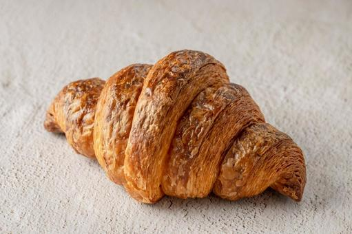

クロワッサン
当店で一番人気なのがクロワッサンです！
バターをたっぷり練りこみ香ばしく焼き上げました。
メロンパン

夕張メロンで作ったクリームを中にたっぷりと詰め込んだ逸品です。
上のクッキー生地はあえて厚めにすることでサクサク感を楽しめるようにしました。
塩パン

塩気があるので甘いパンが苦手な方でも美味しく召し上がれます！
塩はヒマラヤ岩塩を使用しております。
フランスパン

外はパリパリ、中はふわふわの細長いパンです。
そのまま食べてもよし、真ん中に切り込みを入れて野菜などをはさんでサンドウィッチにして食べてもよしの商品となっております。
TOPへ戻る